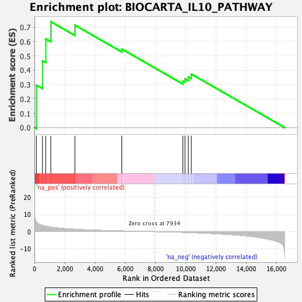

| | | Dataset | DE_genes2 |
| Phenotype | NoPhenotypeAvailable |
| Upregulated in class | na_pos |
| GeneSet | BIOCARTA_IL10_PATHWAY |
| Enrichment Score (ES) | 0.7386305 |
| Normalized Enrichment Score (NES) | 1.7477113 |
| Nominal p-value | 0.0 |
| FDR q-value | 0.13456807 |
| FWER p-Value | 0.529 |
Table: GSEA Results Summary

Fig 1: Enrichment plot: BIOCARTA_IL10_PATHWAY
Profile of the Running ES Score & Positions of GeneSet Members on the Rank Ordered List
| PROBE | GENE SYMBOL | GENE_TITLE | RANK IN GENE LIST | RANK METRIC SCORE | RUNNING ES | CORE ENRICHMENT | | 1 | STAT1 | | | 129 | 5.696 | 0.2959 | Yes |
| 2 | IL10RB | | | 530 | 3.638 | 0.4657 | Yes |
| 3 | JAK1 | | | 746 | 3.121 | 0.6191 | Yes |
| 4 | STAT5A | | | 1081 | 2.620 | 0.7386 | Yes |
| 5 | STAT3 | | | 2673 | 1.352 | 0.7144 | No |
| 6 | IL1A | | | 5772 | 0.390 | 0.5477 | No |
| 7 | BLVRA | | | 9807 | -0.402 | 0.3250 | No |
| 8 | IL6 | | | 9946 | -0.445 | 0.3404 | No |
| 9 | BLVRB | | | 10166 | -0.514 | 0.3545 | No |
| 10 | HMOX1 | | | 10366 | -0.575 | 0.3731 | No |
Table: GSEA details [plain text format]
Fig 2: BIOCARTA_IL10_PATHWAY: Random ES distribution
Gene set null distribution of ES for BIOCARTA_IL10_PATHWAY